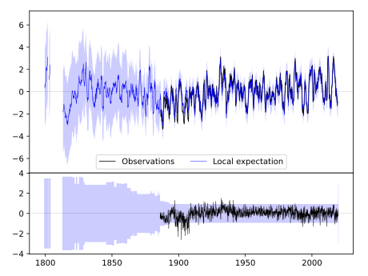
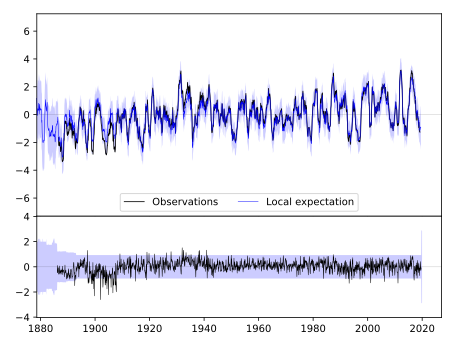
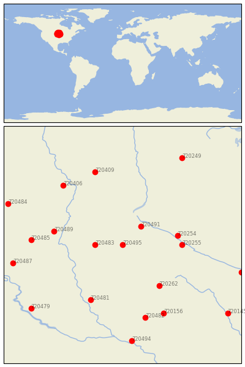

WATERTOWN RGNL AP [USA]


| Neighbour | Name | Country | Distance | Lon/Lat | Years |
|---|
| 720495 | WATERTOWN RGNL AP | USA | 0 | -97.1, 44.9 | 1886-2019 |
| 720483 | CLARK | USA | 47 | -97.7, 44.9 | 1893-2019 |
| 720491 | MILBANK 4 NW | USA | 54 | -96.7, 45.3 | 1886-2019 |
| 720254 | MILAN 1 NW | USA | 96 | -95.9, 45.1 | 1893-2019 |
| 720255 | MONTEVIDEO 1 SW | USA | 102 | -95.8, 44.9 | 1889-2019 |
| 720262 | PIPESTONE | USA | 118 | -96.3, 44.0 | 1893-2019 |
| 720489 | MELLETTE 4 W | USA | 122 | -98.6, 45.2 | 1892-2019 |
| 720481 | ALEXANDRIA | USA | 144 | -97.8, 43.7 | 1882-2019 |
| 720485 | FAULKTON 1 NW | USA | 157 | -99.1, 45.0 | 1892-2019 |
| 720406 | FULLERTON 1 ESE | USA | 176 | -98.4, 46.2 | 1893-2019 |
| 720156 | ROCK RAPIDS | USA | 181 | -96.2, 43.4 | 1893-2019 |
| 720482 | CANTON | USA | 182 | -96.6, 43.3 | 1893-2019 |
| 720409 | LISBON | USA | 183 | -97.7, 46.5 | 1891-2019 |
| 720487 | HIGHMORE 1 W | USA | 194 | -99.5, 44.5 | 1887-2019 |
| 720257 | NEW ULM 2 SE | USA | 216 | -94.5, 44.3 | 1864-2019 |
| 720484 | EUREKA | USA | 219 | -99.6, 45.8 | 1893-2019 |
| 720479 | ACADEMY 2NE | USA | 222 | -99.1, 43.5 | 1893-2019 |
| 720249 | DETROIT LAKES 1 NNE | USA | 234 | -95.8, 46.8 | 1890-2019 |
| 720494 | VERMILLION 2 SE | USA | 234 | -96.9, 42.8 | 1884-2019 |
| 720145 | ESTHERVILLE 2 N | USA | 247 | -94.8, 43.4 | 1893-2019 |